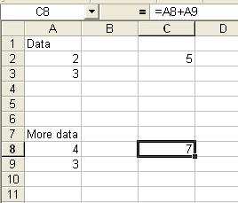

Spreadsheets like Excel are more than just convenient ways of entering and storing data, they are remarkably capable calculators. In addition to entering text or numbers in a spreadsheet cell, you can enter an equation to perform some function, such as:
=2+3The equals sign is used to tell Excel that this is an equation, rather than just a string of text. When you hit enter, you will see the result of this calculation displayed in the cell, and the formula will be displayed in the formula bar at the top of the worksheet.
Another way to calculate 2+3 is to enter the numbers into cells in the worksheet, and then use "cell references" in a formula, like so:
Here, the numbers are in cells A2 and A3, and we enter an equation in cell C2 that refers to the cells where the numbers are stored, rather than using the numbers themselves. Why do this? The first reason is that if we decide we didn't really mean to add 2+3, but rather meant to add 4+3, we can just change the value in cell A2 to 4, and the formula will update automatically. This is a trivial example with only two numbers, but if you had hundreds of numbers you were working with it would be nice to be able to correct mistakes in the data without having to change the equations. Another good reason for using equations is that the cell references are "relative" to the position of the equation, and if you copy and paste the equation down two rows, the cell references will increase by two to reflect the change. For example:
Two additional numbers have been entered, in cells A8 and A9. Since there was already a formula in the worksheet for adding two numbers in adjacent rows, we can copy that formula from cell C2 and paste it in cell C8. When the equation is pasted into cell C8, it updates the cell references to reflect that the equation is now six rows lower in the sheet, and the formula in C8 is thus automatically changed to =A8+A9. This is tremendously useful, because it means that once you have a formula entered correctly, you can copy and paste it to other locations as needed.
Basic mathematical operations are done in Excel using the following symbols:
| Operation | Symbol | Example |
| Addition | + | =2+3 |
| Subtraction | - | =2-3 |
| Multiplication | * | =2*3 |
| Division | / | =2/3 |
| Exponents | ^ | =2^3 |
Hopefully you remember from your math classes that n'th roots are the same as raising a number to the 1/n'th power - thus, you can calculate the square root of a number with:
=2^(1/2)Parentheses are used to group operations, and dictate the order - operations are done within the parentheses first.
Another way to do math in Excel is to use built-in functions. For example, rather than using:
=A2+A3in our example above, we could have used:
=sum(A2,A3)Functions always have a pair of parentheses next to them, with no space between the name of the function and the left parentheses. Anything within the parentheses is called an "argument" for the function, and arguments can either be the data on which the function will operate (as with our sum() function), or some other piece of information that the function needs in order to operate properly. As written, the sum() function is given two arguments, the cells that contain the data, separated by a comma. Arguments are always separated by commas in Excel (other spreadsheets may use other characters). With only two numbers to sum this is a fine way to specify the arguments, but if we had many numbers a more compact way would be:
=sum(A2:A300)In this case, we are telling the sum() function to add up any values in cell A2, A300, and all the cells in between. Using a colon to separate the cells tells Excel to include all the cells between the two that are named. This syntax can be used to specify rectangular regions on the spreadsheet as well. For example, if we had used:
=sum(A2:B300)we would have summed all the numbers in column A from row 2 to 300, as well as all the numbers in column B from row 2 to 300.
To return to the spreadsheet equation for the binomial distribution:
=binomdist(number of females, clutch size, probability of female, cumulative)There are four arguments for this function, which I've translated for you as the number of females ("number_s" to Excel), clutch size ("trials" to Excel), probability of female ("probability_s" to excel), and cumulative (also "cumulative" to Excel). Excel only knows which argument is which based on the order they appear, so be sure to enter your values in the right place! To calculate the probability of 4 females in a clutch size of 4 with a probability of female of 0.17 (for "High" temperatures), you would enter in cell F9:
assuming that A9 is the cell indicating a "4" for four females (your pivot table may be a little different - use the correct cell for your table). The final argument, "cumulative", is set to 0 if you just want to know the probability of getting 4 females, or set to 1 if you want to know the probability of getting any number of females up to 4 (that is, 0, 1, 2, 3, or 4).
Using cell references for the first argument is very handy, because now it's possible to copy and paste the cells to the rest of the rows of the table to get probabilities for the other outcomes. If you select the cell F9, copy it, and then paste it to F5 through F8, you will get this:
When the cells are pasted, the references are updated to point to their own rows, which has the effect of calculating the probabilities for the remaining numbers of females. The cells F5 through F9 now give the probabilities of each possible number of females in a clutch of four.
Be careful, though - if you then decide to really save yourself some hassles and copy and paste to the next column over to do the "Low" temperatures, be aware that the cell reference will now point to one column over as well, and you will be pointing to B5 through B9, instead of A5 through A9. Make sure that when you paste your equations that their cell references are pointing to the right place!
Cell equations are tremendously useful, and Excel has dozens of them. Just as a small example, there are functions for:
| Mean | =average(data range) |
| Median | =median(data range) |
| Standard deviation | =stdev(data range) |
| Variance | =var(data range) |
| Square root | =sqrt(value) |
as well as many more complex statistical functions we may encounter later in the semester.